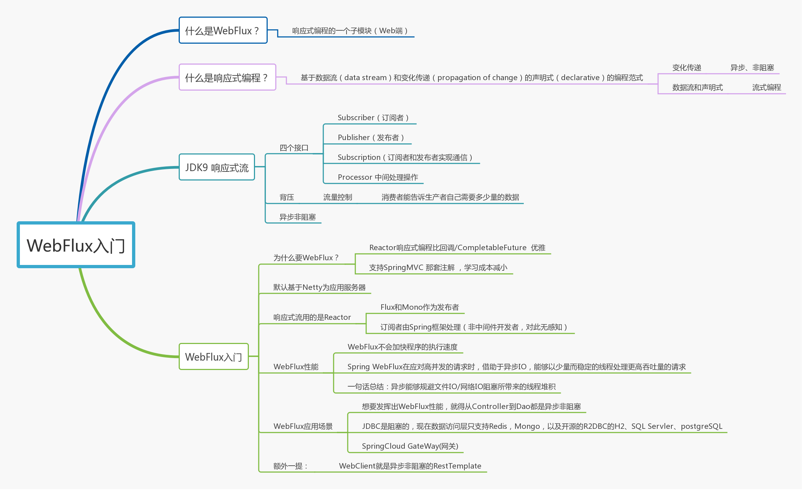
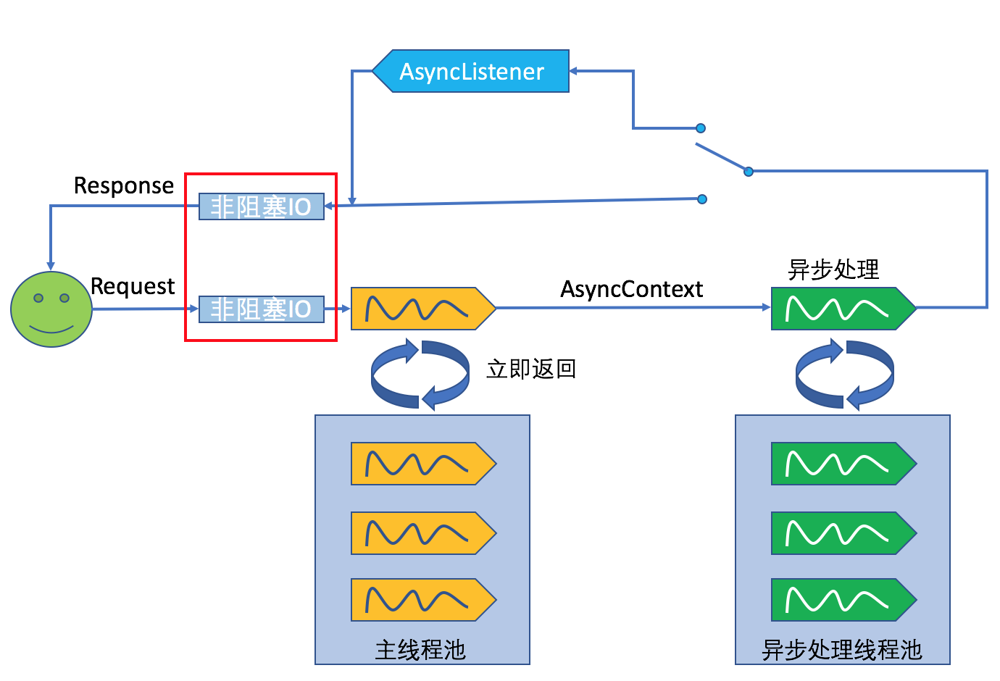
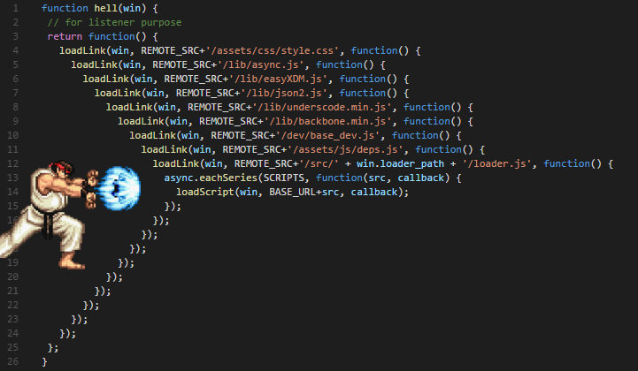
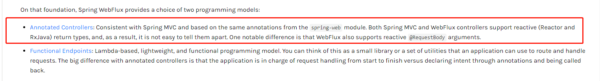
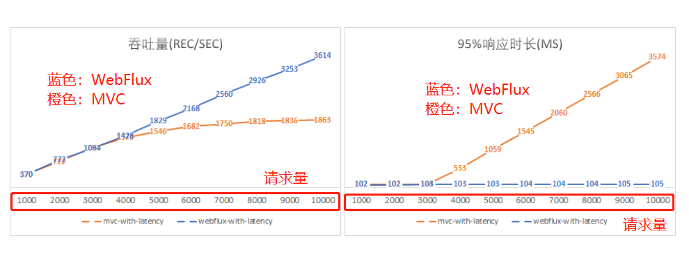
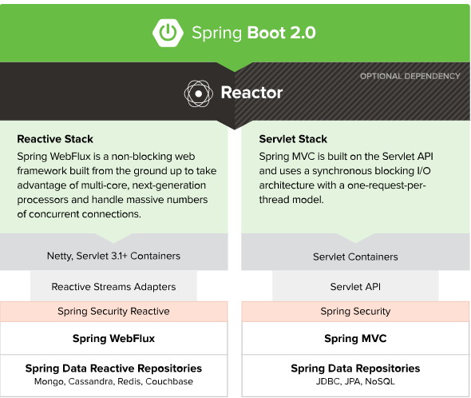
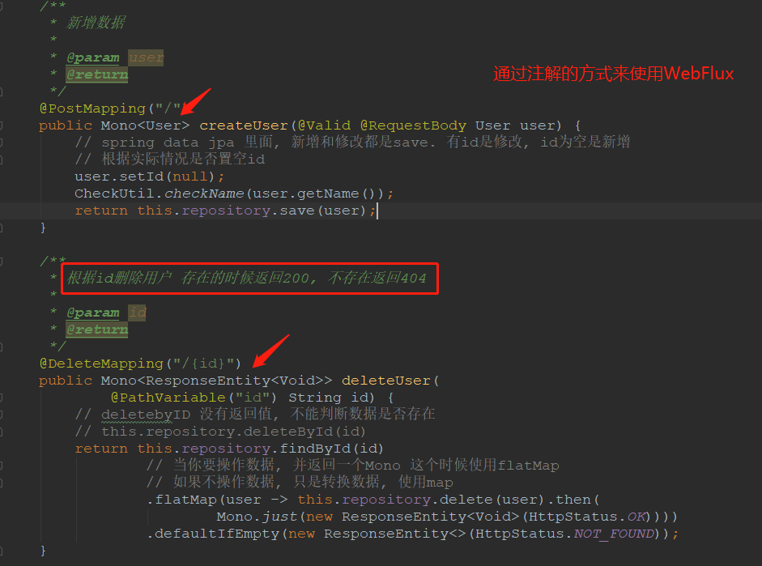
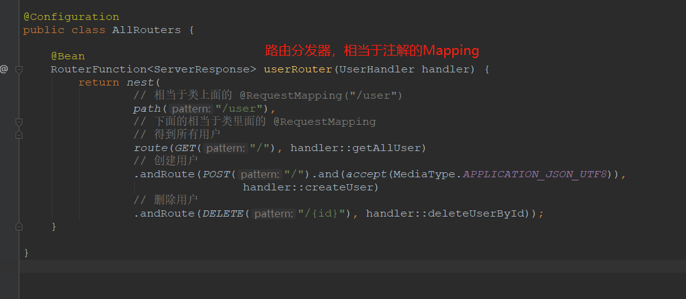
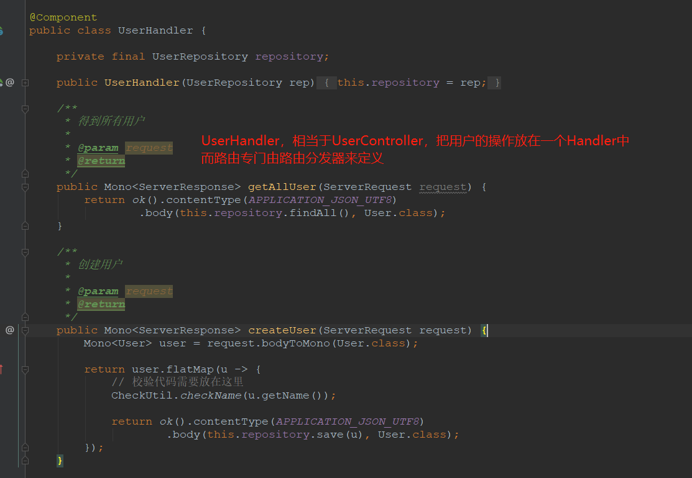

原文连接:https://www.cnblogs.com/Java3y/p/12004801.html
前言
只有光头才能变强。
文本已收录至我的GitHub精选文章，欢迎Star：https://github.com/ZhongFuCheng3y/3y
回顾一下上篇我对WebFlux的入门，如果没读过的同学建议读一下再来看本篇文章，上一篇文章花了我很多的心血~~
开局再来一张图，内容全靠编：

这篇主要写写我初学时对WebFlux的一些疑问，不知道大家在看上一篇文章的时候有没有相应的问题呢？
这次学WebFlux主要的动力是公司组内分享，写了一个PPT，有需要的同学在我的公众号（Java3y)下回复“PPT”即可获取。
一、本来就能实现异步非阻塞，为啥要用WebFlux?
相信有过相关了解的同学都知道，Servlet 3.1就已经支持异步非阻塞了。
我们可以以自维护线程池的方式实现异步
- 说白了就是Tomcat的线程处理请求，然后把这个请求分发到自维护的线程处理，Tomcat的请求线程返回
@WebServlet(value = "/nonBlockingThreadPoolAsync", asyncSupported = true)
public class NonBlockingAsyncHelloServlet extends HttpServlet {
private static ThreadPoolExecutor executor = new ThreadPoolExecutor(100, 200, 50000L, TimeUnit.MILLISECONDS, new ArrayBlockingQueue<>(100));
protected void doGet(HttpServletRequest request, HttpServletResponse response) throws ServletException, IOException {
AsyncContext asyncContext = request.startAsync();
ServletInputStream inputStream = request.getInputStream();
inputStream.setReadListener(new ReadListener() {
@Override
public void onDataAvailable() throws IOException {
}
@Override
public void onAllDataRead() throws IOException {
executor.execute(() -> {
new LongRunningProcess().run();
try {
asyncContext.getResponse().getWriter().write("Hello World!");
} catch (IOException e) {
e.printStackTrace();
}
asyncContext.complete();
});
}
@Override
public void onError(Throwable t) {
asyncContext.complete();
}
});
}
}流程图如下：

上面的例子来源：
简单的方式，我们还可以使用JDK 8 提供的CompletableFuture类，这个类可以方便的处理异步调用。
protected void doGet(HttpServletRequest request,
HttpServletResponse response) throws ServletException, IOException {
long t1 = System.currentTimeMillis();
// 开启异步
AsyncContext asyncContext = request.startAsync();
// 执行业务代码(doSomething 指的是处理耗费时间长的方法)
CompletableFuture.runAsync(() -> doSomeThing(asyncContext,
asyncContext.getRequest(), asyncContext.getResponse()));
System.out.println("async use:" + (System.currentTimeMillis() - t1));
}
要处理复杂的逻辑时，无论是回调或 CompletableFuture在代码编写上都会比较复杂（代码量大，不易于看懂)，而WebFlux使用的是Reactor响应式流，里边提供了一系列的API供我们去处理逻辑，就很方便了。

更重要的是：
- WebFlux使用起来可以像使用SpringMVC一样，能够大大减小学习成本
- WebFlux也可以使用Functional Endpoints方式编程，总的来说还是要比
回调/CompletableFuture要简洁和易编写。

值得一提的是：
如果Web容器使用的是Tomcat，那么就是使用Reactor桥接的servlet async api
如果Web容器是Netty，那么就是使用的Netty，天生支持Reactive官方的推荐是使用Netty跑WebFlux
二、WebFlux性能的问题
我们从上篇文章中就发现，浏览器去调用处理慢的接口，无论是该接口是同步的，还是说是异步的，返回到浏览器的时间都是一致的。
- 同步：服务器接收到请求，一个线程会处理请求，直到该请求处理完成，返回给浏览器
- 异步：服务器接收到请求，一个线程会处理请求，然后指派别的线程处理请求，请求的线程直接空闲出来。
官网也说了：
Reactive and non-blocking generally do not make applications run faster
使用异步非阻塞的好处就是：
The key expected benefit of reactive and non-blocking is the ability to scale with a small, fixed number of threads and less memory.That makes applications more resilient under load, because they scale in a more predictable way
好处：只需要在程序内启动少量线程扩展，而不是水平通过集群扩展。异步能够规避文件IO/网络IO阻塞所带来的线程堆积。
下面来看一下针对相同的请求量，同步阻塞和异步非阻塞的吞吐量和响应时长对比：

注：
- 请求量不大时(3000左右)，同步阻塞多线程处理请求，吞吐量和响应时长都没落后。（按道理WebFlux可能还要落后一些，毕竟多做了一步处理
-->将请求委派给另一个线程去做处理 - 请求量大时，线程数不够用，同步阻塞(MVC)只能等待，所以吞吐量要下降，响应时长要提高(排队)。
Spring WebFlux在应对高并发的请求时，借助于异步IO，能够以少量而稳定的线程处理更高吞吐量的请求，尤其是当请求处理过程如果因为业务复杂或IO阻塞等导致处理时长较长时，对比更加显著。
三、WebFlux实际应用
WebFlux需要非阻塞的业务代码，如果阻塞，需要自己开线程池去运行。WebFlux什么场景下可以替换SpringMVC呢？
- 想要内存和线程数较少的场景
- 网络较慢或者IO会经常出现问题的场景
SpringMVC和WebFlux更多的是互补关系，而不是替换。阻塞的场景该SpringMVC还是SpringMVC，并不是WebFlux出来就把SpringMVC取代了。

如果想要发挥出WebFlux的性能，需要从Dao到Service，全部都要是Mono和Flux，目前官方的数据层Reactive框架只支持Redis，Mongo等几个，没有JDBC。
目前对于关系型数据库，Pivotal团队开源出R2DBC（Reactive Relational Database Connectivity），其GitHub地址为：
目前R2DBC支持三种数据源：
总的来说，因为WebFlux是响应式的，要想发挥出WebFlux的性能就得将代码全改成响应式的，而JDBC目前是没支持的(至少MySQL还没支持)，而响应式的程序不好调试和编写（相对于同步的程序），所以现在WebFlux的应用场景还是相对较少的。
所以，我认为在网关层用WebFlux比较合适（本来就是网络IO较多的场景）
现在再回来看Spring官网的图，是不是就更亲切了？

参考资料：
四、有必要学Functional Endpoints 编程模式吗？
前面也提到了，WebFlux提供了两种模式供我们使用，一种是SpringMVC 注解的，一种是叫Functional Endpoints的
Lambda-based, lightweight, and functional programming model
总的来看，就是配合Lambda和流式编程去使用WebFlux。如果你问我：有必要学吗？其实我觉得可以先放着。我认为现在WebFlux的应用场景还是比较少，等真正用到的时候再学也不是什么难事，反正就是学些API嘛~
有Lambda表达式和Stream流的基础，等真正用到的时候再学也不是啥问题~
以下是通过注解的方式来使用WebFlux的示例：

以下是通过Functional Endpoints的方式来使用WebFlux的示例：
路由分发器，相当于注解的GetMapping...

UserHandler，相当于UserController：

五、WebFlux的实际使用场景
总的来说，因为WebFlux是响应式的，要想发挥出WebFlux的性能就得将代码全改成响应式的，而JDBC目前是没支持的(至少MySQL还没支持)，而响应式的程序不好调试和编写（相对于同步的程序），老项目也不太可能把依赖直接升上Spring5.0，所以现在WebFlux的应用场景还是相对较少的(个人觉得)。
网关层用WebFlux比较合适（本来就是网络IO较多的场景）
- SpringCloud Gateway是基于WebFlux实现的
最后
这次学WebFlux主要的动力是公司组内分享，写了一个PPT，有需要的同学在我的公众号（Java3y)下回复“PPT”即可获取。
本已收录至我的GitHub精选文章，欢迎Star：https://github.com/ZhongFuCheng3y/3y
乐于输出干货的Java技术公众号：Java3y。公众号内有300多篇原创技术文章、海量视频资源、精美脑图，关注即可获取！
非常感谢人才们能看到这里，如果这个文章写得还不错，觉得「三歪」我有点东西的话 求点赞 求关注️ 求分享👥 求留言💬 对暖男我来说真的 非常有用！！！
创作不易，各位的支持和认可，就是我创作的最大动力，我们下篇文章见！